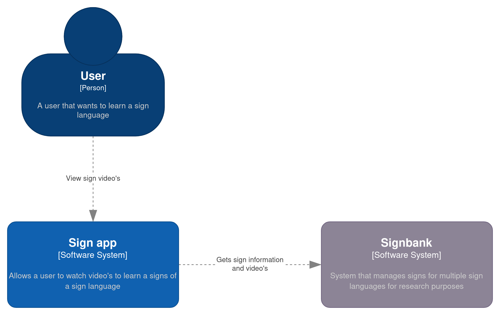
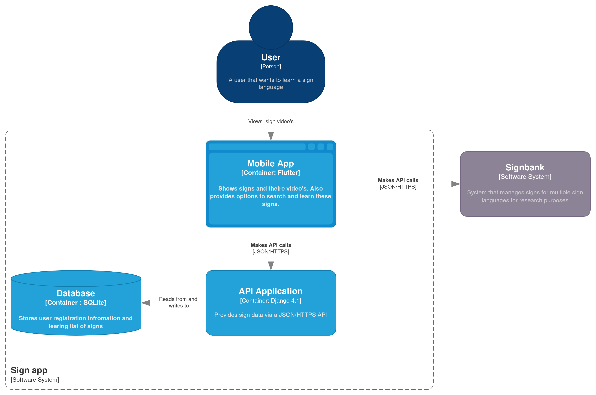
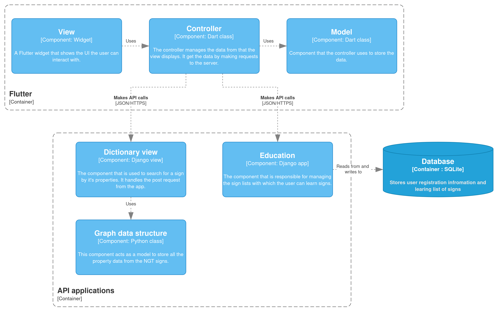

Documentation
Here you will find the documentation for the Sign app. In this documentation the purpose and the functionality of the app is described. It will also show the deployment of the app and give an installation guide for people that want to contribute in developing the app.
Introduction
The Sign app is designed for people who want to learn sign language. With the app, users can learn signs by watching videos. The app provides a publicly available interface for Signbank videos, along with lists of words that users can learn and a test their knowledge of the sign language.
The backend uses Django 4.1 with Python 3.10, and the app is developed with Flutter, targeting Android and iOS phones. Signs are taken from Signbank, which connects to the app through a RESTful API.
This document focuses on the design of the Sign app to provide a better understanding of how its different components work and communicate with each other. It should also offer some insight into the application's functionality and constraints, highlighting some of the decisions made based on these attributes.
This document uses C4 model and other diagrams to illustrate the full scope of the application.
System context
This page shows the most zoomed out view of the system. It provides an overview of the different systems used, including the Signbank which the Sign app utilizes to obtain sign language data. The user only interacts with the Sign app, which displays this data.

System containers
As shown in the diagram below, the Sign app system comprises three containers: a mobile front-end that retrieves data from the Signbank, a back-end that serves data to the front-end, and an SQLite database that stores user data.

The back-end is hosted on the Ponyland cluster, see the Ponyland wiki for more information about the cluster and the deployment of the application.
System components
The following diagram depicts the structure of the different systems used in the Sign app. Both the front-end and back-end follow the Model-View-Controller (MVC) pattern, although Django's implementation of the pattern differs slightly. Please refer to their FAQ for more information. To make the structure consistent between Flutter and Django, the Flutter code also follows the same pattern. This is expected to make it easier for newcomers to understand the structure.
The majority of these components are not concrete classes, but rather an abstract layer. In the next section, the components will be described in more detail, including their functions and usages

The API endpoints documentation provides a comprehensive list of all the possible requests for Signbank and the Sign app back-end. It specifies the type of requests you can make, the data that the request expects, and the data that the request will return.
The user interface documentation provides an overview of the layout of the Flutter views and their components.
Code
In this section, important parts of the code will be highlighted. The code will be split into two parts: that from Flutter and Django. Both parts will have their respective class diagrams. The purpose of these diagrams is to show an overview of the code structure in concrete classes. They will also explain important functions and attributes in more detail after the class diagram.
For clarity's sake, the class diagrams omit functions and attributes that do not add value to understanding the code base, such as getter, setter, and other methods.
Flutter
In the class diagram for the Flutter code, some class associations or inheritance are left out to remove clutter. For example, the view classes inherit from the Dart "StatefulWidget" class. A "StatefulWidget" class is accompanied by a private "State" class, as is the norm in Flutter. All of these things are left out to make the diagram more readable and are represented by a single view class.
It is recommended that if you are not familiar with the "StatefulWidget" and "StatelessWidget" classes from Flutter, you read their documentation first to get a basic understanding of the framework
View
As mentioned previously, it is recommended that you examine the documentation for the StatelessWidget and StatefulWidget classes in Flutter before reviewing the code, to gain a basic understanding of the framework. The view classes inherit from a widget class, which means that they override a build method to display the user interface.
Callback method
A view that uses a controller should implement a callback method. The purpose of this method is to update the UI when the controller loads or changes data. The simplest version of this function is to call setState in the callback function or pass the setState function to the controller. The setState function reloads the UI and shows the updated data. Read the Flutter documentation here for more information.
Controller
The controller class is responsible for managing the data in the view. It retrieves the data from the server when it is not present. Once the data is received from the server, the controller updates the view by calling the callback function that was set in the view, as mentioned above.
Abstract Controller
This class is the base for all controllers. It provides methods that child controller classes can use to make HTTP requests to the server. By creating a class that handles these requests, it is possible to remove duplicate code and have a consistent structure. Another advantage is that it allows for implementing error handling in a singular place.
It is an abstract class, which means specific controller implementations should inherit from it.
All of the methods in this class are generic, which means they can be used with both model objects and primitive types, which makes it more flexible. In the next section, we will provide a more detailed explanation of these methods.
Request methods
The GET and POST request methods use the dart HTTP library to make a request. These methods require an endpoint URL and a function that can create an instance of type T from JSON. Depending on the type of request, additional parameters may be required, such as a request body for a POST request.
These methods return a future of type T?. A Future is the result of an asynchronous function. You can learn more about futures and async programming in dart here. When the method completes, it returns an instance of type T?. The question mark indicates that the instance is allowed to be null. This means that controller implementations should check if the returned data is null and handle the situation appropriately. When the return value is null, it indicates that something went wrong and the base controller should display an error message to the user.
You can specify the type of the method in the same way as you would specify the type of a class instance. For example, the following code makes a GET request that returns a list of signs:
returnData = await super.getRequest<List<Sign>>(
url: signBankBaseUrl + endpointUrl,
fromJsonFunction: Sign.listFromJson);
Parse response
The request methods call the parseResponse function, which checks if the request was successful. If successful, it attempts to parse the JSON into an object by using jsonDecode and the given fromJson function.
The reason for providing the fromJson function as a parameter is to make the code more flexible. This way, you can use a primitive type, an object, or for example list of objects, and you only need to adjust the function accordingly.
If the request or the parsing of an object fails, this function returns null and displays an error message to the user.
Controller implementation
Controller implementations such as the SignListController and PropertyListController inherit from the Controller class. These classes are specific types of controllers that manage the model and update the view when the data is loaded. They also specify which endpoint to call to receive the data.
To retrieve data from the server, these implementations use the request methods provided by the abstract controller class.
Model
The model is a simple class object that represents a domain or a data request structure. In most cases, it is recommended to create a "fromJson" constructor or a "toJson" method that allows for serialization of the object using the "jsonDecode" and "jsonEncode" methods. Of course, if there is no need to serialize the object, then it should not implement these methods.
The model is a simple class object that represents a domain or a data request structure. In most cases it is recommended to create "fromJson" constructor or "toJson" method which allows for serialization of the object, with "jsonDecode" and "jsonEndocde" methods. Of course if there is no need to serialize the object that it should not implement these methods.
Django
In this section, the backend code will be discussed. Django also uses a type of MVC for its code structure. Because there are multiple Django applications, that means there are also multiple view and model classes, and the code will be separated into these applications. Basic Django features like the urls.py file will not be discussed here unless they deviate from the norm.
To make creating an API in Django easier the Django REST framework is used.
View
The view is responsible for handling the request from the front-end. The endpoint URL is set in the URL file, which points to this view and a specific function. For all possible requests, please refer to the API documentation.
This view expects an HTTP request type and will return an HTTP response with a list of properties as the body.
NodeSerializer
The serializers class is a feature form the Django REST framework and is responsible for being able to serialize the Node class.